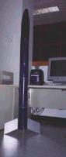
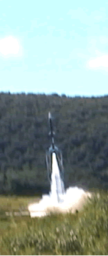

Historique
|
| Le Groupe Aérospatial de
l'Université Laval (GAUL) a été fondé en 1993;
son objectif principal était et demeure toujours la conception et
la réalisation de fusée expérimentales. Depuis sa formation,
le GAUL a réalisé huit projets, dont sept fusée expérimentales. |
| La première de ces fusées, Orion,
a été lancée en août 1004 au Festival
de l'Espace de Bourges, en France. Ce festival était une campagne
de lancement annuelle organisée conjointement par l'Association
nationale science technique jeunesse (ANSTJ) et le Centre
National d'Études spaciales (CNES). Orion n'a pas été
en mesure d'ouvrir le parachute qui lui aurait permis d'atterrir en douceur
et d'être par la suite récupérée : le premier
projet du GAUL a donc été un échec, imputable en majeur
partie à l'inexpérience des membres, pour qui la construction
d'une fusée expériementale était alors une activité
nouvelle. |
 |
 |
L'année suivante, le GAUL a conçu
Artémis, une fusée très
semblable à Orion, mais dotée, entre autres, de cartes électronique
et de systèmes mécaniques plus performants et fiables. Son
lancement en août 1995 au Festival de l'Espace
de Bourges, a cette fois-ci été un succès total
: le système de récupération de la fusée ayant
fonctionné de façon optimale, Artémis a pu être
récupérée après avoir récolté
les données fournies par ses différents capteurs. |
| Cette réussite a poussé le GAUL
à entreprendre, l'année suivante, un projet de plus grande
envergure encore : il s'agissait de la fusée bi étage
Apollon, lancée en septembre 1997 à la base militaire
de Valcartier. Ce projet s'est en effet étendu sur deux années
compte tenu de sa complexité - celle ci ayant peut-être été
la cause de l'arrêt du signal de télémétrie après
la séparation des deux étages qui a valu au projet la qualification
de «succès en demi-teinte». Entre-temps cependant, le
GAUL fournissait à l'automne 1995 la charge utile (des capteurs de
pression atmosphérique) pour la fusée miniature Capella conçue
et réalisée par l'Agence de recherche
et de développement de l'aérospatiale amateure (ARDAA). |
 |
 |
En 1996, l'arrivée de nouveaux membres
a pousée le GAUL à entreprendre, simultanément au projet
Apollon, la conception de la fusée expérimentale Miranda,
qui a été lancée à Bourges en août 1997,
un mois avant Apollon. Miranda, contrairement à Apollon, a connu
un vol nominal avec une descente amortie par son parachute. Cependant, l'expérience
principale qu'elle transportait, un gyroscope fabriqué avec le GAUL,
n'a pas fonctionnée correctement. L'équipe du GAUL a tout
de même remporté le prix Joseph-Mercier pour son sérieux
et son professionnalisme au Nouveau Festival des
Clubs Espace, le nom de la campagne ayant été
modifié en 1997. |
| En septembre 1998, Riopelle,
la cinquième fusée du GAUL, fut lancée à Valcartier.
Cette fusée ne comportait qu'un seul étage, contrairement
à Apollon. Riopelle avait à son bord deux fumigènes
pour tracer la trajectoire de la fusée dans le ciel, comme les coups
de pinceau, d'où le nom du peintre québécois. Malheureusement,
le seul parachute n'ayant pas tenu le coup, Riopelle s'est écrasée
avec fracas au sol. Heureusement, la télémétrie a fonctionné
durant une partie du vol, ce qui a tout de même permis d'obtenir des
données durant le vol. |
 |
 |
Le 11 septembre 1999, Babylone
est lancée, encore une fois à Valcartier. Elle atteint une
altitude d'environs 1650 mètres avant de redescentre tout en douceur,
ralentie par ses deux parachutes. Babylone fut un véritable succès
pour le GAUL. Fonctionnant à merveille, elle était la consécration
d'une année d'efforts. On l'a récupérée sur
le mont Corriano, tout près du site de lancement. |
| Le 9 septembre 2000, a eu lieu à Valcartier
de lancement de Magellan. Cette fusée
était très semblable à Babylone à la différence
que, tout comme son ancêtre Apollon, c'était une fusée
à deux étages. Magellan a connu un vol presque parfait et
la séparation a eu lieu comme prévu. |
|
| |
L'année suivante, fort du succès
qu'avait remporté Magellan, le GAUL s'est donnée comme objectif
de rendre plus fiable les systèmes mécaniques. De plus, les
membres de la section électronique ont commencé l'intégration
d'un nouveau microproceseur beaucoup plus puissant que les précédents;
Copernic était né. Malgré
certains problèmes avant le décollage, le vol a été
un succès relatif, la fusée ayant retombée uniquement
à l'aide de ses parachutes de secours. Malheureusement, il a cependant
été impossible de la retrouver malgré plusieurs minutes
de recherche, ce qui fut une déception étant donné
que Copernic n'était pas équipée de télémétrie. |
| Durant l'année 2001-2002, le GAUL a travaillé
au projet Taranis, qui visait principalement
à former une équipe en grande partie renouvelée. De
plus, le nouveau microprocesseur était fin prêt à être
intégré dans une fusée. |
 |
|
|
|